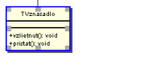
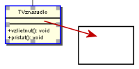
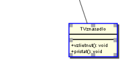
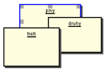
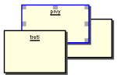
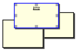

Presúvanie prvkov
Presúvanie prvkov funguje spôsobom "ťahaj a pusti" ("Drag and Drop")



Ak chceme posunúť viacero prvkov, musíme ich najprv označiť. To sa dá buď postupným klikaním
na prvky so stlačenou klávesou "Ctrl", alebo obdĺžnikovým označením oblasti diagramu.
Poradie prvkov
Ak sa nejaké prvky prekrývajú, môžeme určiť poradie vykresľovania ("Z-Order").
Keď máme označený prvok, ktorý chceme presunúť dopredu / dozadu, klikneme
pravým tlačidlom myši, čím sa nám otvorí kontextové menu.
V podmenu "Poradie" zvolíme požadovanú akciu.



Poznámka:
Menu pre poradie vykresľovania nájdeme aj v hlavnom menu "Element"⇨"Poradie",
prípadne môžeme použiť klávesové skratky "PageUp"/"Home" (dopredu) a "PageDown"/"End" (dozadu).
Upozornenie:
Poradie vykresľovania neovplyvňuje spojenia - tie sú vždy viditeľné a môžu pôsobiť rušivo.